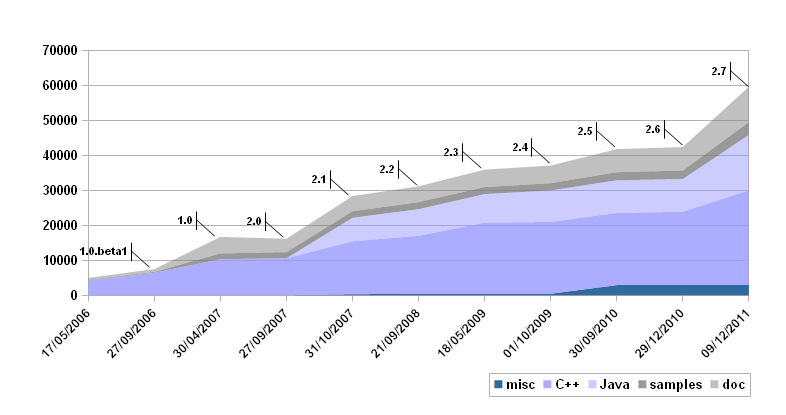

Version 2.7:
You guys start contributing and that's GREAT !
Bug detection and fixes, feature proposal, question & answers...
all that good job makes it a major version.
Text edition facilities, and many other improvements (non blocking execution, telnet...)
>>>
[changes][download]
<<<
Dec, 15th 2010
Version 2.6 release (patch for version 2.5).
Sep, 30th 2010
Version 2.5 release.
Oct, 1st 2009
Sourceforge registration
>>> [aroyer-cli] <<<
(The main location of the project remains this page).
This 'Hello world' example shows the direct relationship
between the XML resource file and the CLI execution of the user-defined function 'sayHello()' for instance.
Here is list of the main features of the CLI toolkit:
Edition facilities:
The user can use left and right arrows, begin and end, delete and backspace keys for command line edition.
History:
The user can use up and down arrows to navigate through the command line history.
Completion and help:
The user has facilities to get into the set of commands.
The CLI toolkit automatically manages completion,
and help can be set for every keyword and parameter.
Menus:
User-defined commands can give access to user-defined menus,
which may contain other sets of user-defined commands,
and so on...
XML resource file:
All the command lines syntax can be described in an XML resource file, natively managing keywords, parameters, tags...
This XML resource file provides the ability to directly insert the final native calls attached to each command,
making the link with a global application.
Automatic documentation generation:
Based on the XML resource file, the CLI toolkit provides a stylesheet automatically generating CLI documentations.
Generic input/output:
Input/output can be easily redirected.
The CLI toolkit currently gives support for the following regular input/output devices:
console, telnet connections, files and strings.
But you may implement your own intput/output device for your special needs.
Traces:
An inner traces management system is available with the toolkit.
How does it work?
Considering you already have the user code to execute at end,
all you have to do is the following:
Edit an XML resource file;
Transform the XML resource file into target language code;
Integrate the result of the transformation.
For instance, in C++, the result of the transformation is a C++ source file.
You should therefore compile it
and link it with the CLI library and your user-defined program.
You should also make a call somewhere in your program
to launch the execution of your CLI.
In most cases, it should not be too difficult to have it work quickly.
In Java, compile the Java source file resulting of the transformation.
Then use the CLI object defined in it and the CLI library to launch it.
Just ensure you have the native CLI library available from your system paths.
That's it.
The transformation step is just an XSLT transformation
using an XSL stylesheet provided with the toolkit.
Therefore, the most difficult (and it aims to be easy) is the XML resource file edition.
Have a look at the CLI user guide for more information.
Main interests
Here is a list of possible interests you could have in this projects:
Text-based user interface:
The CLI toolkit basically aims to implement text-based user interfaces.
Graphical user interfaces are generally more attractive,
however text-based interfaces also have their advantages:
few means prerequesits,
fast execution,
integration facilities (see automation below),
analysis facilities...
Monitoring and debug:
It is sometimes useful to have a secondary user interface,
to monitor and debug an application.
Configuration files:
You can easily define a specific configuration file syntax with the CLI toolkit.
Therefore, you could use it instead of .ini or XML files.
Automation:
Since CLI is text-based, it is compatible with automation.
Automated test tools generally need to interact with tested equipments or softwares.
The CLI toolkit is an easy way to implement an entry point on target equipments for unit tests.
Simple compilers:
The CLI toolkit can be used for its command line parsing ability,
making by that way compilers of simple syntaxes.
License
This software, written by Alexis Royer,
has moved to a BSD-like license since version 2.0.
This kind of license is compatible with commercial use, modification and redistribution,
under the terms of the license.
Bug(major)! <tag @ref/> preceding <tag @id/> in sub-nodes causes crashes (correction checked with samples/test/fwd-tag.xml sample)
Bug(major)! XSL: '"select" attribute is not allowed on the xsl:call-template element!' XSL transformation error with Saxon (checked also with Xalan) (yuhuawen's contribution integration)
Bug(major)! cli2help.xsl fails with Saxon: various XSL syntax errors fixed
Bug(major)! <string.h> header missing with g++ version 4.4.4 (ubuntu 10.10): NativeObject.cpp, io_mux.cpp, ncurses_console.cpp, tk.cpp
Bug(major)! Misuse of OutputDevice::FreeInstance() return code in Shell::CloseDevices() (major because of possible crashes, never seen however)
Bug(minor)! XSL: return cli::... statements do not compile with Visual Studio 6.0
XSL generation improved for a better readability of the code generated: user-code highlighted, and comments addition indicating the current chain of keywords in analysis
Input/output character management improvements, "endl" support modification for Input/Output devices. '\n' are automatically interpreted by devices now
Input file device improvements: bufferization for optimization, special characters disabling, error location / error prefixing modification
Bug(major)! cli::tk::Queue::Iterator [tk_stl.h] definition revision. Incompatible with some compilers.
Bug(major)! Java object consistency problems.
Bug(major)! XSL generation errors for menus directly generated for an endl node.
Bug(major)! Bad cppclic.xsl generation for 2 level menu structures.
Bug(major)! Memory leak in Queue::~Queue() [tk_inner.h] -> m_arptQueue was not destroyed.
Bug(major)! Consistency errors because of static constant objects in C++ files when compiled with Visual .NET. Singleton used instead.
Bug(major)! Bad javaclic.xsl generation for 2 level menu structures. Test addition.
Bug(major)! History cannot store more than 100 command lines
Bug(minor)! InputFileDevice::GetKey(): unknown characters do not end the file anymore.
Bug(minor)! Spelling error: "Uncomplete" changed to "Incomplete" in CommandLine::Parse().
Bug(minor)! System includes (#include <>) changed into project includes (#include "").
Bug(minor)! When an input file does not exist (cli::InputFileDevice), no error message is printed out.
=> Addition of a m_cliLastError member in cli::OutputDevice, that can be set by all subclasses.
Bug(minor)! TAB when the line is empty does nothing.
Traces consistency improvement. Addition of Traces::UnsetStream()
XSL revisions (inherited from java experience):
CLI tree created in the scope of the CLI class;
Both static and dynamic CLI instantiation;
Generation of CLI_EXECUTION traces
License modification:
The former LGPL license has been abandoned for a BSD-like license.
This is the decision of the author (myself) in order to have fewer constraints
on using and modifying the toolkit in any kind of softwares (even commercial ones),
which is what I wanted initially.
Very first release.
I still propose it for download for history purpose only.
Quite stable, but needs little adaptation to work under Windows for instance.
Let's say it was ready for demonstration.
The following charts gives the evolution of the number of code lines throughout the time:

Next evolutions
To my point of view, the major aims of the CLI toolkit have been reached so far, and I'm quite proud of that.
That's the reason why there are not many modifications expected in the next times.
But once again, if you feel the need for any other evolution, please .
Coming next:
Other target languages:
Supported languages are C++ and Java at present.
Next ones could be Perl or python...
Shell timeout management:
Add inner support for timeout management within a shell.
Memory pools:
Implement memory pools in order to provide better memory management with embedded integration contexts.
...
Download
Latest version of the CLI toolkit is 2.7.
Please refer to history section for previous downloads.